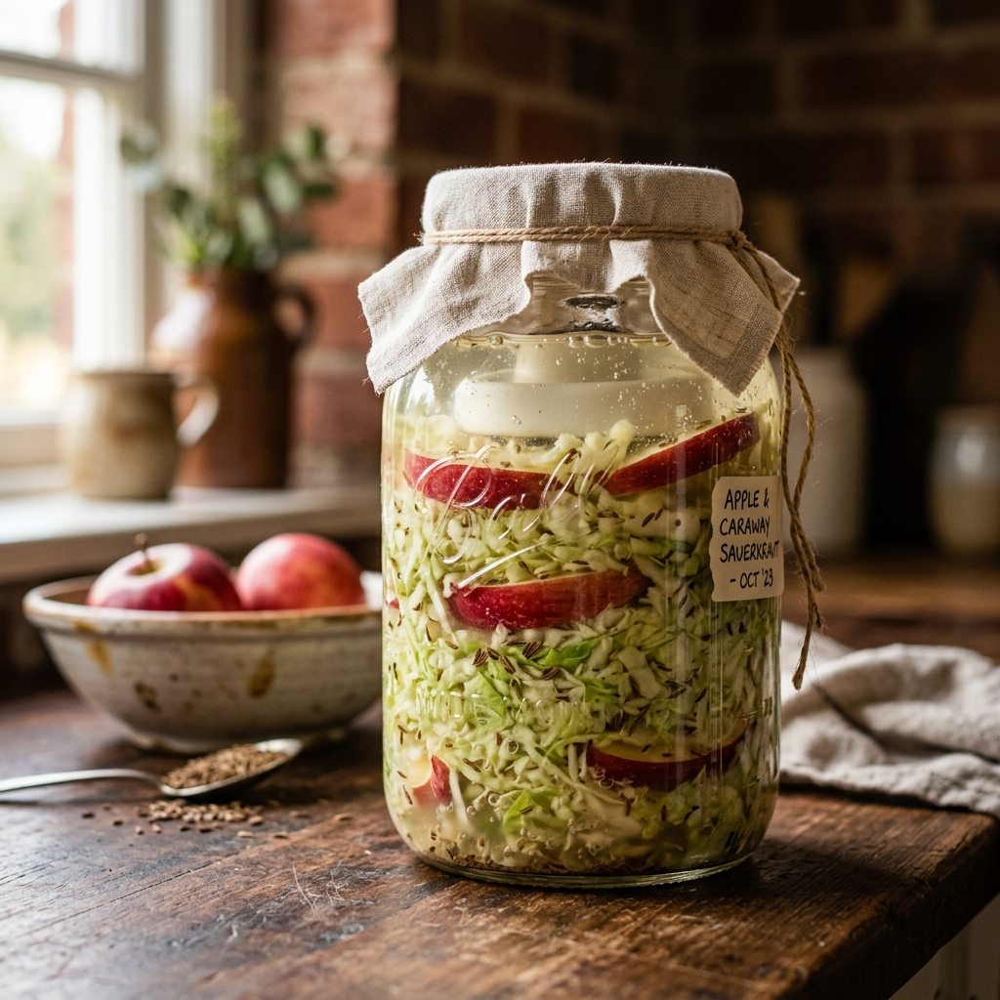
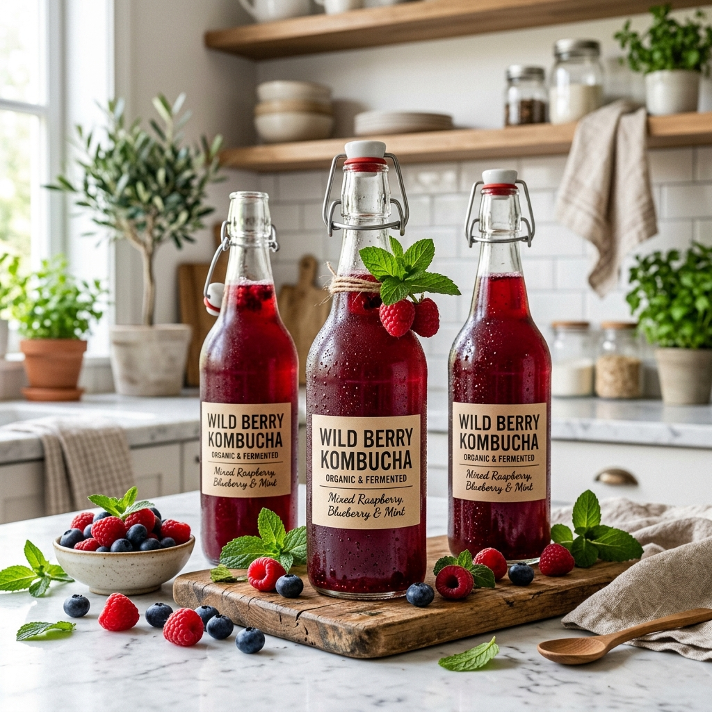
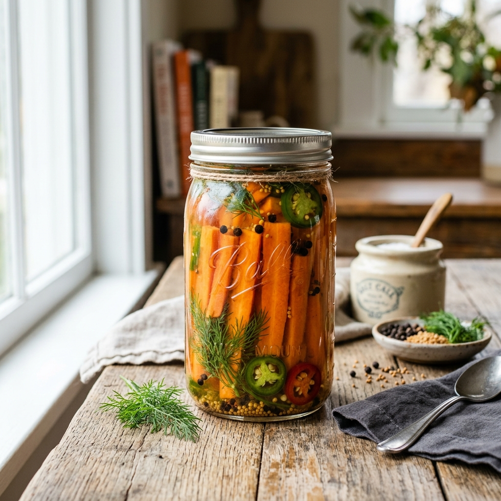

Browse All Recipes
Find Your Next Ferment

Easy🕐 30min · 14 days
Classic Sauerkraut
Simple two-ingredient recipe yielding tangy, probiotic-rich fermented cabbage.

Easy🕐 40min · 14 days
Apple Caraway Kraut
Sweet and savory twist with grated apple and toasted caraway seeds.

Medium🕐 1hr · 5 days
Traditional Napa Kimchi
Authentic Korean kimchi with gochugaru, garlic, ginger, and fish sauce.
Medium🕐 45min · 4 days
Cubed Radish Kimchi
Crunchy kkakdugi — daikon radish cubes in spicy fermented paste.

Advanced🕐 20min · 21 days
Ginger Lemon Kombucha
Fizzy probiotic tea with fresh ginger root and bright lemon zest.

Medium🕐 25min · 18 days
Mixed Berry Kombucha
Sweet and fruity second-fermentation kombucha with blueberries and raspberries.

Easy🕐 20min · 7 days
Garlic Dill Pickles
Crunchy, briny fermented pickles with fresh dill, garlic, and peppercorns.

Easy🕐 15min · 5 days
Spicy Pickled Carrots
Crunchy carrot sticks fermented with jalapeño, garlic, and cumin seeds.

Advanced🕐 45min · 10 days
Habanero Fire Sauce
Fiery fermented hot sauce with habaneros, roasted garlic, and apple cider.